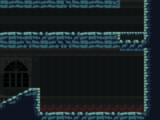
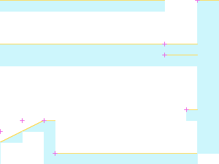
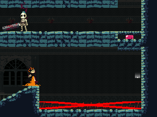

rmCastle14
ROOM_249_S002 · ROOM 249 · rectangle [320, 0, 320, 240]


Статическая реконструкция v4; не native gameplay screenshot. Голубой: маски; жёлтый: опоры; розовый: pivot.
Исходный OBJT sprite_index, кадр 0 — исследовательский кандидат

Не исполнены native Create/Step/Draw, shaders, FSM и динамические spawn paths.
Готовность
Статическая основа: ready. Полная native-сцена: blocked_native_audit. Игровая сборка: не создана.
Переработать только подтверждённые статические визуальные слои под будущую авторскую игру. Сохранить сетку, границы, читаемость опор и места стыков. Новые сюжет, сцены и рисунки ещё не утверждены.
Зависимости
Future art direction and target asset classifier · Native actor/spawner/state/VFX audit before complete scene handoff
Рабочая очередность предложена по связности. Исполнитель: художница; личность, сроки и новые рисунки не назначены.
Depth слои: 5, 4, 3, 2, 0. Опоры и ограничения: точные ROOM transforms и отдельные авторские маски; соседство не переосмыслять.
Входы, выходы и соседи
Входы: E250_00
Выходы: E249_01
{"section": "ROOM_249_S001", "kind": "shared_image_boundary", "direction": "left", "physical_passage": "unknown; drawing boundary is not a door"}
{"section": "ROOM_250_S002", "room": 250, "edge": "E249_01", "kind": "authored_transition", "direction": "up", "conditions": "room-level gate evidence; not evaluated", "source_anomaly": null}
Исходные условия и механизмы комнаты
[]
Проверенные assetID
Кандидаты и блокеры
SPRT_340, SPRT_394, SPRT_403, SPRT_494, SPRT_500, SPRT_612
Полные авторские placements ↗ · Native-аудит ↗ · Очередь и возвраты ↗